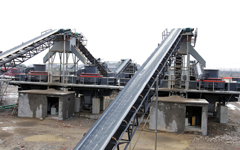

Reasonable river gravel sand making machine process, considering crushing project investment costs, but also can not ignore the cost of production lines. Taking into account the high hardness river pebbles will inevitably lead to a high loss of jaw plate, plate hammer, back panels wear parts, and thus in the process of design, we recommend selection of laminated crushing principle of equipment to reduce the loss of wear parts. Typical lamination device configuration is two plus broken jaw or jaw crusher cone crusher. If the client on the final stone grain type have higher requirements, we recommend that you configure a shaping sand making machine broken, thus forming a three-stage crushing process configuration. Three stage crushing will inevitably lead to increased investment costs of the project, but for long-term operation of the sand making plant, a three-stage crushing to reduce the cost of production is very impressive.
Equipment costs of river gravel sand making production line is based on the scale of production and equipment selection. At present, domestic equipment pure sand capacity 300-400 tons / hour or sand, stone linkage 600-800 tons / hour with a vibrating feeder, jaw crusher, cone crusher, sand making machine, circular vibrating screen, belt conveyor electrical control equipment. If the scale increase productivity, increase the device model number or product line, total investment in basic increase proportionately. Price of imported equipment is generally 2-3 times that of domestic equipment, and operating power costs, higher maintenance costs and maintenance.
Finished sand prices, wages, utilities and other expenses are basically little difference, therefore, it is essential to select the device. Appropriate to increase the quality of the equipment investment, can prolong the life cycle of all accessories, maintenance costs, efficient production time increases, yields improved significantly, which means being able to recover the cost within the shortest possible period, effectively improve profit margins and ROI.
5X sand making machine using stone at stone principle, long life wear parts, equipment maintenance time is short, which greatly improved the life cycle of equipment, to ensure a high yield. While the output of the finished sand mechanism. Type good, uniform size, with the management, can be widely used in highway, railway, hydropower dams, airport construction, concrete mixing stations and other areas. Currently river gravel sand making is the most rational allocation of crushing with jaw broken, broken by cone crusher (small yield of usable fine jaw broken), sand broken by high vertical shaft impact (5X sand making machine) of three broken.
Live chat with our professional customer service! Get the quotation list.
Chat Now